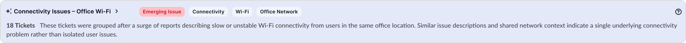
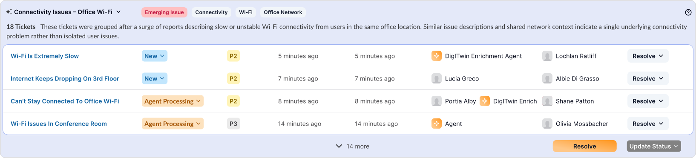
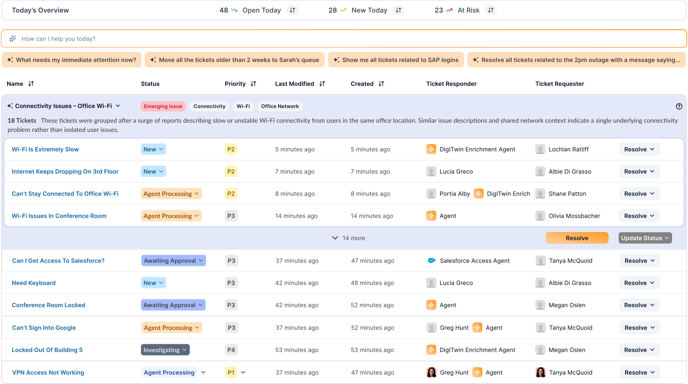

The problem
A core selling point of our product: intake and group tickets by workflow, then resolve them in bulk. But this was a 0→1 product — no existing patterns to reference, no shared understanding of what "grouping" meant across the team. The founder, engineers, and I each had a different mental model.
Iteration 1 — The safe bet
Starting with the known.
I started with what existed in the market: a table view. Rows of tickets, expandable grouping applied on top. Each group showed the title, description, labels, a thumbnail of tickets inside, and a Resolve button with status controls. Groups could expand or collapse. The intention: mass resolve tickets in seconds.



"This is exactly what I was thinking — I just couldn't explain it."
— Grant Fuhr, Software EngineerThe engineer in charge of the grouping mechanism validated it immediately. But the founder's reaction was different:
"It feels too old world. Yes, we're capturing grouping and resolution — but we're not going to sell the product like this."
— Amit Agarwal, FounderThe pivot
Dark mode and the IT admin's identity.
This led to a full redesign — not just the inbox, but the design system. Every competitor prioritized dark mode. Our user, the IT admin, is used to being the "boring sibling" of the engineer. Dark mode wasn't aesthetic — it was empowerment.
Design decision
The shift to dark mode wasn't aesthetic — it was strategic. It signaled to IT admins: this tool was built for you, not adapted from someone else's workflow.
Iteration 2 — Editorial layout
From table rows to a continuum.
Instead of a table, the redesign presented groups editorially — a flowing continuum of grouped tickets, each with its title, description, ticket count, labels, thumbnails, and resolution action.

A common question from engineers and the founder: how do we show ungrouped tickets? My answer: the component doesn't change. A single ungrouped ticket looks the same — just with one ticket inside. Making it visually different would create unintended signals: "Was something wrong?" "Should I focus on this first?" That's not what we want.
Key insight
Visual consistency is trust. If the component looks different based on ticket count, users start reading meaning into the difference — meaning that doesn't exist.
But two new problems emerged.
Problem 1: Engineering jargon in the UI. Working closely with engineers, I'd absorbed their language. The buttons read "Run Agent," "Run Workflow," "Investigate" — terms that meant nothing to an IT admin. Run Agent runs multiple workflows. Run Workflow runs one. Investigate opens a conversation with an AI agent. These distinctions mattered to engineers, not users.
Problem 2: Confidence. The design was essentially asking: "Here's our grouping — want to confirm?" That undermines trust. It also created an overwhelming landing screen: too many rows, too many actions, when the main thing is resolution. Period.
My PM wanted to ship. I pushed back.
Iteration 3 — Confident & simple
Present the answer, not the question.
The final redesign flipped the posture. Groups are presented confidently — not as a suggestion, but as a decision. Click to preview tickets, but the focus is on description, resolution description, and the action itself.

Resolution collapsed to three clear actions:
The three actions
Run — resolve autonomously. Whether it's one workflow or multiple agents, the user doesn't need to know the plumbing.
Inspect — conversation with an AI agent to arrive at a decision together. If inspect appears alone, it means there's no automated resolution — the path to resolution is the conversation.
Dismiss — remove from the queue.
I realized I'd been stuck in engineering language. "Run Agent" and "Run Workflow" both lead to the same outcome: resolved tickets. Is there really a need to distinguish them for the user? I brought this to engineering — and they agreed.
The details that matter.
Gamified resolution. When someone resolves a large batch of tickets at once, the UI celebrates it. Speed should feel rewarding.
Color as priority. Component ordering and color coding draw the eye to what matters most — no need to read labels to know urgency.
Conversational foundation. The page is inherently interactive. An expandable chat bar sits at the bottom — the inbox is a conversation, not just a list.

What I learned.
Working this closely with engineers is a gift and a trap. You gain deep technical fluency — you can talk in their terms, understand constraints, move fast. But you also start designing in their terms. The biggest shift in this project was remembering that the user doesn't care about the difference between an agent and a workflow. They care that the problem goes away.
The other lesson: conviction matters. My PM was ready to ship iteration 2. I wasn't. The final design was better because I trusted the discomfort and pushed for one more round.